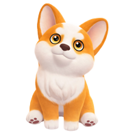
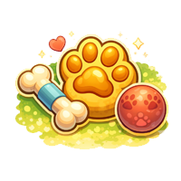
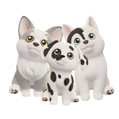

🐶 Chiens
Débloquage des chiens
Après avoir débloquer les chats

3 Chiens dans le foyer
Le 1er chien est au niveau 1 de la passion, le 2e au niveau 4, et le 3e au niveau 8.

Soins des chiens
Si tu prends soin de tes chiens ils te ramèneront des cadeaux chaque matin.

Race de chiens
Il existe 37 races de chiens